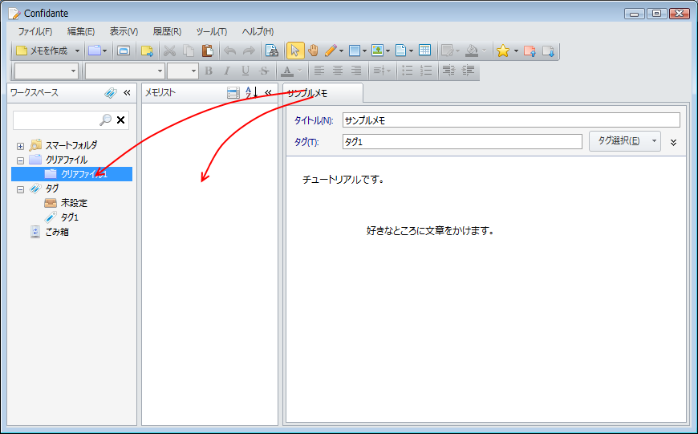

クリアファイルを使う
クリアファイルは使用する状況ごとにノートを短期的にまとめておく機能です。 「毎日使うノート」，「今の仕事でよく使うノート」，「今度の会議のためのノート」， といった具合に，タグで分類するほどではないけれども， まとめておくと便利になるようなノートをまとめます。
クリアファイルを作成する
クリアファイルを作成するにはワークスペースペインで「クリアファイル」を右クリックしてメニューの「クリアファイルを作成」を選択します。
クリアファイルにノートを追加する
ノートをクリアファイルに追加するには，ノートエディタのタブをクリアファイルにドラッグ&ドロップします。 また，ワークスペースペインでクリアファイルを選択している状態で「ノートリスト」ビューにタブをドラッグ&ドロップして追加することもできます。

クリアファイルのノートを開く
クリアファイルに追加したノートはワークスペースペインでクリアファイルを右クリックしてメニューで「すべてのノートを開く」を選んだり， 「ノートリスト」ビューで右クリックしてメニューで「すべて開く」を選ぶと一度にノートを開けます。
クリアファイルをアクティブにする
クリアファイルをアクティブクリアファイルにすると，アクティブクリアファイル内のノートとノートエディタで開いているノートが同期されるようになります。 クリアファイルをアクティブクリアファイルにするにはワークスペースペインで， クリアファイルを右クリックしてメニューで「アクティブにする」を選択するか， ツールバーの「アクティブクリアファイルの選択」ボタンでクリアファイルを選択します。 クリアファイルをアクティブにすると今まで開いていたノートが閉じ，クリアファイル内のノートが開かれます。

アクティブクリアファイルを選択した状態でノートを開くとアクティブクリアファイルに自動的に追加されます。 逆に，ノートを閉じるとアクティブクリアファイルから自動的にノートが削除されます。
ワークスペースペインでアクティブクリアファイルを右クリックしてメニューで「非アクティブにする」を選ぶか， ツールバーの「アクティブクリアファイルの選択」ボタンで 「アクティブクリアファイルなし」を選択するとアクティブクリアファイルが解除されます。